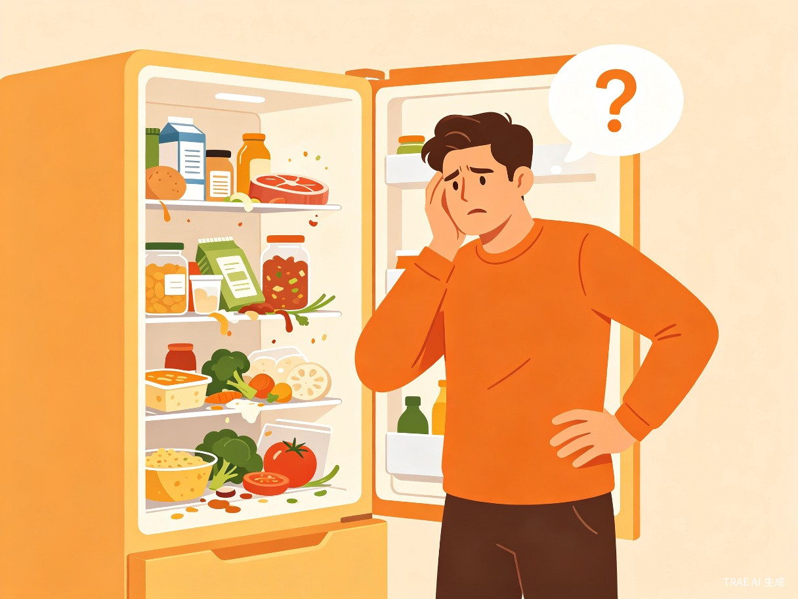
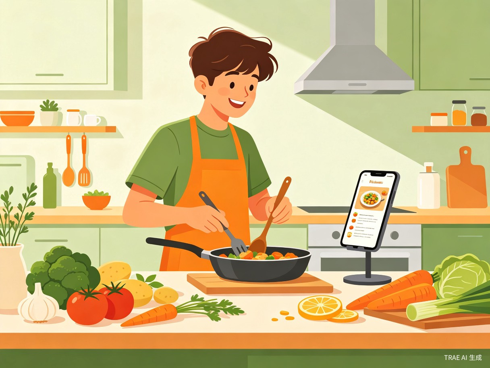

创意介绍
想解决什么问题？
现代家庭冰箱里常常堆积着大量食材，用户记不清买了什么、什么快过期，最终导致大量食物浪费。据统计，中国城市家庭每年因食材过期浪费的食物价值超过人均800元。同时，面对冰箱里有限的食材，很多人不知道该做什么菜，缺乏烹饪灵感。
为什么会想到做这个？
灵感来源于日常生活中最常见的场景——打开冰箱却不知道吃什么。我们团队中的每个人都经历过这样的时刻：买了一堆菜放进冰箱，一周后发现一半已经坏了。如果能有一个智能助手，帮你记住冰箱里有什么、提醒你什么快过期、还能根据现有食材推荐菜谱，这个问题就能被优雅地解决。
产品形态
食光记是一款微信小程序，用户通过拍照识别、语音输入或手动录入的方式管理冰箱中的食材库存，系统利用AI自动追踪保质期、推荐食谱，并提供一键生成购物清单的功能。

目标用户及痛点
独居年轻人
工作忙碌，做饭频率低，经常忘记冰箱里有什么，食材过期浪费严重。需要简单高效的管理工具。
小家庭用户
有买菜做饭习惯，但缺乏系统化的食材管理方式，经常重复购买或遗漏使用，希望减少浪费、提升效率。
健康饮食人群
注重营养搭配，希望根据现有食材获得科学的食谱推荐，减少外卖依赖，提升居家饮食质量。
使用场景
- 买菜回家后：打开小程序，拍照或语音录入新买的食材，系统自动识别并记录入库时间
- 每天做饭前：查看冰箱食材清单，获取AI推荐的可用菜谱，解决"今天吃什么"的难题
- 食材快过期时：收到智能提醒通知，优先使用即将过期的食材，避免浪费
- 去超市前：系统根据常用食材和库存情况，自动生成购物清单
当前痛点
如果没有食光记，用户面临以下问题：
1. 记不住——冰箱里有什么全靠记忆，经常重复购买或遗漏
2. 不知道——面对现有食材缺乏烹饪灵感，最终选择外卖
3. 浪费多——食材过期才发现，每年浪费数百元
4. 没计划——买菜缺乏规划，想到什么买什么，营养搭配不均衡

核心功能
AI拍照识别
对食材拍照即可自动识别种类、数量，支持蔬菜、水果、肉类、调味品等数十种分类，录入零门槛。
智能保质期追踪
自动计算食材剩余保鲜天数，提前2-3天推送过期提醒，用颜色标签直观显示紧急程度。
AI食谱推荐
根据冰箱现有食材智能匹配菜谱，优先推荐使用快过期食材的菜品，支持筛选口味、烹饪时间、难度。
购物清单生成
根据常购食材、库存缺口和收藏菜谱自动生成购物清单，去超市前一键查看，告别遗忘。
价值与意义
效率提升
食光记帮助用户省去记忆和规划的心智负担。拍照录入替代手动记录，AI推荐替代搜索菜谱，智能提醒替代定期翻冰箱。用户每天在"吃什么"这个问题上花费的时间从平均15分钟缩短到1分钟以内，同时减少不必要的超市 trips。
社会价值
食物浪费是一个全球性问题。中国每年浪费的食物总量约3500万吨，其中家庭厨房浪费占比超过30%。食光记从家庭端减少食物浪费，不仅帮助用户省钱，更是在为环保和可持续发展贡献力量。如果每个使用食光记的家庭减少40%的食材浪费，累计的社会效益将是巨大的。
技术方案
技术栈
实现路径
- 阶段一（MVP）：实现食材手动录入、保质期追踪、基础菜谱推荐功能
- 阶段二：接入AI拍照识别，支持语音录入，优化推荐算法
- 阶段三：加入社区分享、营养分析、个性化推荐等高级功能